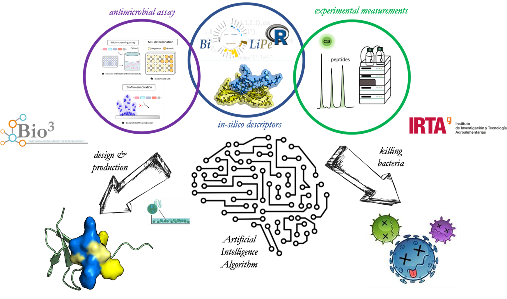
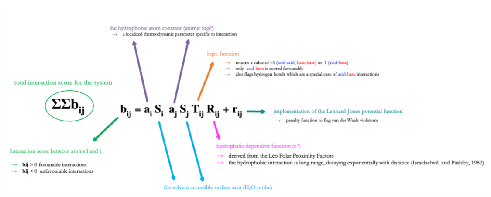
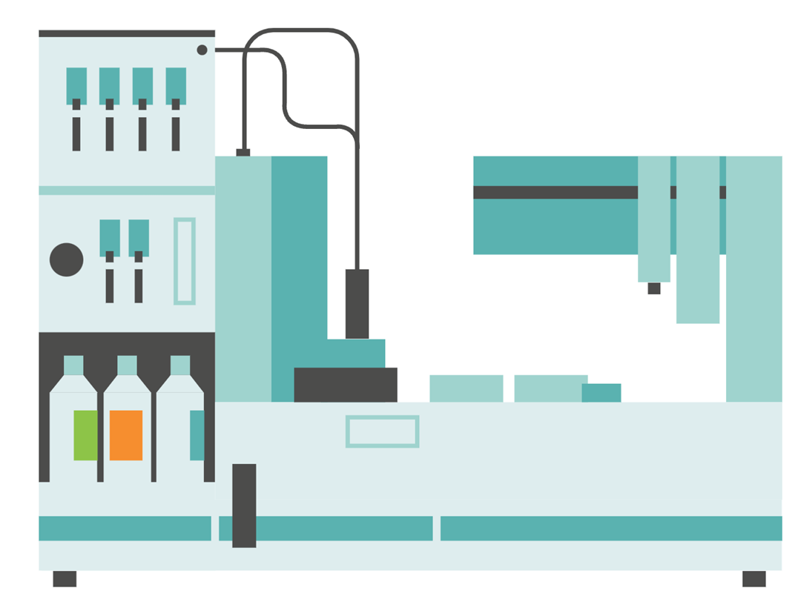

What We Study
Our interdisciplinary research spans computational chemistry, biology, machine learning, and experimental methods—all applied to drug design, development, environmental sciences, and chemical regulation.
Design of New Bioinspired Superantibiotics

Antibiotic resistance (ABR) is a critical global public health threat—1.27 million deaths worldwide in 2019 alone, with projections surpassing cancer mortality by 2050. In collaboration with IRTA (Institute of Agrifood Research and Technology, Spain), we design bioinspired superantibiotics based on personalized host defense peptides (HDPs) selected by artificial intelligence. Our transdisciplinary approach integrates broad antimicrobial screening with experimental and in-silico physicochemical characterization to recombinantly produce tailored HDPs with superior potency, selectivity, and lower toxicity than existing antimicrobials.
🤝 Collaboration: IRTA · Dra. Elena García & Dra. Ana Arís (Barcelona)Simulation — Drug Design

Chemoinformatics tools, ADME-Tox profiling, molecular docking with Glide, QSAR studies, and classical molecular dynamics simulations with AMBER—focused on antibiotic and drug discovery pipelines.
Simulation — Computational Biology

QSAR and MD simulations in peptides and proteins, especially antimicrobial peptides (AMPs). Mutation-effect prediction in diseases such as Alzheimer's and Myotonia. Study of neuroprotective and antioxidant peptides.
Computational Chemistry

Development and parameterization of the IEFPCM/MST continuum solvation model using Gaussian. Determination of QM-based physicochemical properties in drugs and environmental pollutants, including SAMPL blind challenges.
Theoretical — Physical Chemistry

Theoretical models for pH-dependent lipophilicity profiles of ionizable compounds and for relative water content in aerosols as a function of organic solutes in colloidal suspensions. Development of scoring functions for docking studies with Pharmacelera Inc.
Data Exploration & AI

Machine learning models for physicochemical properties in small molecules (bioactivity, lipophilicity, tautomeric equilibria) and pollutants (solubility, toxicity). ML-based environmental bioaccumulation prediction. Structure-based lipophilicity scale for amino acids.
Experimental Methods

Potentiometric and Shake-flask methods for pKa and lipophilicity. Quantification of emerging environmental pollutants via analytical techniques. Phytotherapeutics with nanotechnology. Chromatography (HPLC, UPLC), NMR, MS, IR, and ORAC antioxidant methods.